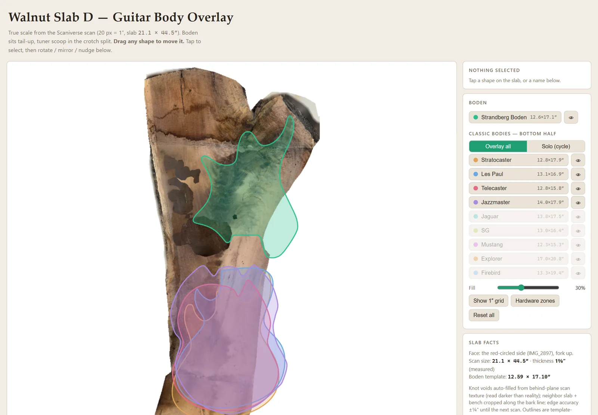
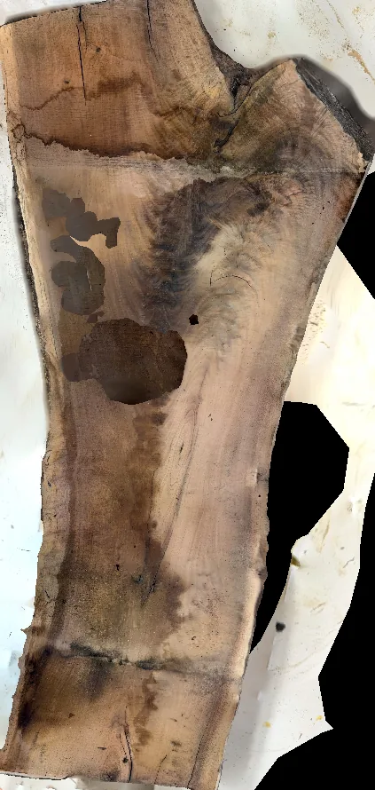
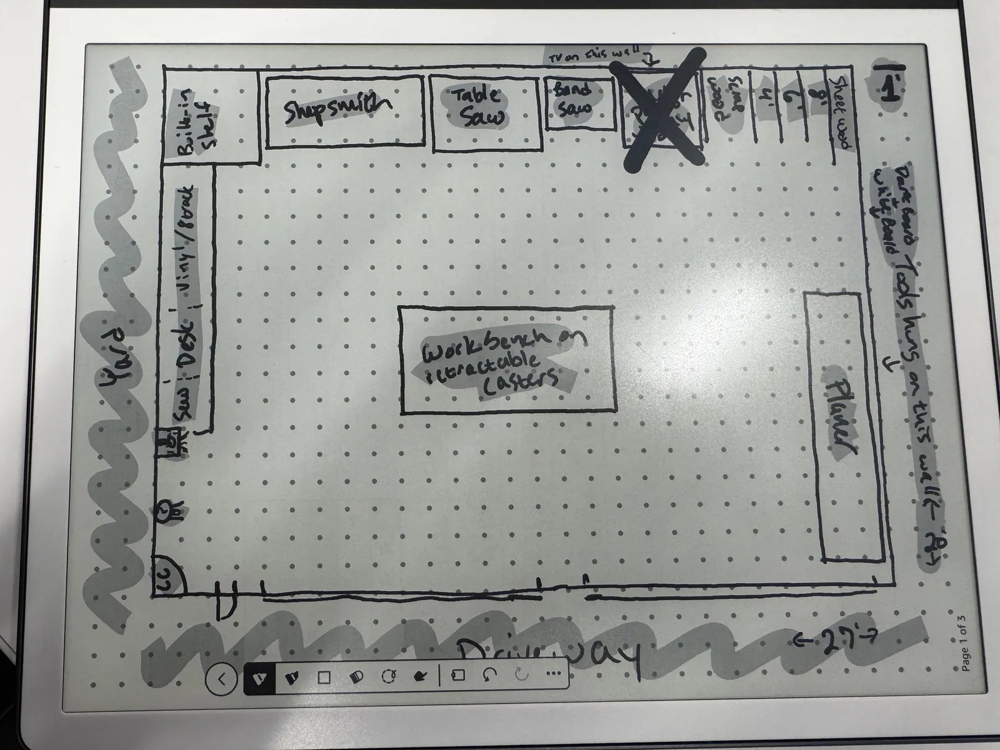
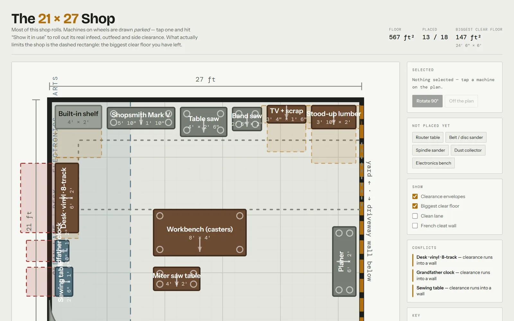
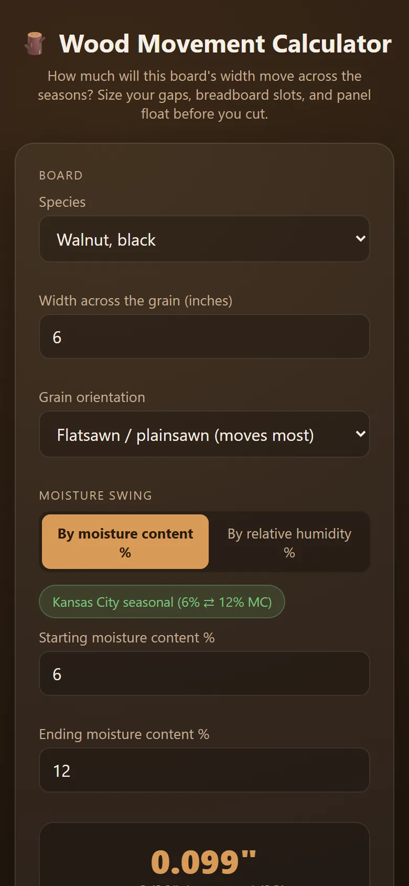
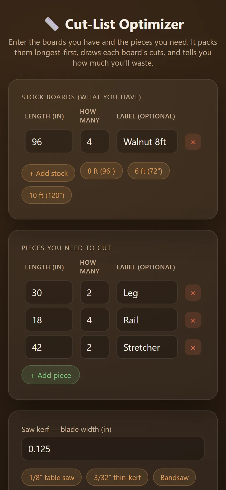

Measure twice. Scan once.
I have eight slabs of black walnut and a hundred ideas for them. Walnut is too precious to guess with. So the shop's tools start with a phone: scan the wood in 3D, lay the plan on top at true scale, and only then pick up a saw.


A phone scan, turned into a flat, true-scale photo
The iPhone's LiDAR sensor and a free app capture the slab in 3D. The scan also picks up the floor, the bench and the slab next to it. So I wrote a pipeline that finds the slab's top surface, throws away everything else, and lays it out flat at exactly 20 pixels per inch.
The result is a photo you can measure: this slab is 21.1 × 44.5 inches, with every knot where it really is.
Try ten guitars on before cutting one
Ten guitar body shapes sit on top of the scan at true size: Stratocaster, Les Paul, Telecaster, Jazzmaster and more. Drag them around, rotate them, and see which one dodges the knots.
The rule that matters is simple. The knots can go anywhere except under the neck pocket, the bridge, and the path between them, because that's where the strings pull.
Three shapes come from real templates. The other seven are careful approximations, and the app says which is which.


From a sketch to a to-scale shop plan
I sketched the 21 × 27 ft shop on a tablet, and it became an interactive plan where every machine is drawn to scale and can be dragged around.
The breakthrough wasn't technical. Every machine in my shop is on wheels, so there's no single "best layout." The real question is how much clear floor can I get when everything is parked. So that's what the planner measures.
The same scanning trick measured a kitchen nook with an odd wall. The scan says that corner is 45.5°, which is exactly the angle a custom table needs to meet.


Shop math, with sources
Wood swells and shrinks with the seasons, and a tabletop that ignores that will crack. The wood movement calculator uses figures for 32 species from the USDA's Wood Handbook, and every number cites its table and page.
Checking those citations caught a mistake: the value I'd been using for walnut under-predicted movement by about 15%. The cut-list optimizer packs the pieces you need onto the boards you have and shows how much you'll waste.
Under the hood
- Wall angles: a small script finds the floor in a room scan, groups the wall surfaces, and reports the angle between them.
- Guitar outlines come from a 3D-printable template (flattened to 2D), a full-size plan (paths extracted from its SVG), and hand-authored curves scaled to published dimensions.
- The shop hub is a small Flask app with a project journal (idea → planned → building → done, build steps, sketches, measurements). New tools plug in as modules without touching the core.
- A tool inventory from 42 photos, plus a manual library with a folder for each tool: routers, sanders, a Shopsmith Mark V and more.
The woodshop app itself is still mostly scaffolding. The project journal and calculators work. The tool catalogue, the jig and scrap inventories, and the per-project hubs exist as data and plans, not screens yet. What you see above are the pieces that got built first because a real project needed them.
The shop planner is the design direction for the hub: to scale, draggable, and honest about what fits.
Could this work for you?
A phone scan that turns into real measurements works on anything with odd angles: a room, a deck, a roof, a jobsite. Capture it once, and measure it at the desk as many times as you like.